정보처리기사(구) (2001-03-04 기출문제)
1과목: 데이터 베이스
1. 데이터베이스 운영시 데이터베이스에 손상이 가해져 회복(Recovery) 작업을 해야 하는 경우가 발생할 수 있는데, 이런 경우 데이터베이스에 손상을 줄 가능성이 가장 적은 장애는?(공식 답안은 가번이 답이었습니다. 라번이라는 말도 많습니다. 여기서는 가번을 정답 처리 합니다. 논란의 소지가 있는 문제 입니다.)
- 트랜잭션 장애(Transaction Failure)
- 시스템 장애(System Failure)
- 미디어 장애(Media Failure)
- 네트워크 장애(Network Failure)
(정답률: 76%)

2. 자료처리 시스템은 자료의 처리 형태에 따라 일괄처리, 온라인 처리, 분산처리 시스템으로 구분할 수 있다. 다음 중 일괄처리 시스템에 대한 설명으로 옳지 않은 것은?
- 일괄 처리 시스템은 시스템 중심의 자료 처리 방법이다.
- 테이프와 같은 순차 접근 방법을 사용하는 업무에 적합하다.
- 각 트랜잭션 당 처리비용이 많이 든다.
- 단위 시간당 처리하는 작업수가 많으므로 시스템 성능은 높다.
(정답률: 47%)
3. 데이터의 무결성(integrity)을 보장하기 위하여 DBMS의 트랜잭션이 가져야 할 특성에 해당하지 않는 것은?
- 트랜잭션의 연산은 데이터베이스에 모두 반영되든지 아니면 전혀 반영되지 않아야 한다.
- 트랜잭션의 실행은 데이터베이스의 일관성을 유지해야 한다.
- 트랜잭션이 일단 그 실행을 성공적으로 완료하면 그 결과는 영속적이어야 한다.
- 하나의 트랜잭션이 실행 중에 있는 연산의 중간 결과는 다른 트랜잭션이 접근할 수 있어야 한다.
(정답률: 63%)
4. 해싱(Hashing)에 관한 설명으로 옳지 않은 것은?
- 버킷(bucket)이란 하나의 주소를 갖는 파일의 한 구역을 의미하며, 버킷의 크기는 같은 주소에 포함될 수 있는 레코드 수를 의미한다.
- 슬롯(slot)이란 한 개의 레코드를 저장할 수 있는 공간으로 n개의 슬롯이 모여 하나의 버킷을 형성한다.
- 충돌(collision)이란 레코드를 삽입할 때 2개의 상이한 레코드가 똑같은 버킷으로 해싱되는 것을 의미한다.
- 해싱은 충돌(collision)이 발생하면 항상 오버플로우(overflow)가 발생한다.
(정답률: 68%)
5. 다음 영문이 설명하는 사람은?
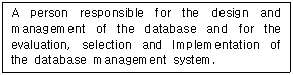
- user
- system engineer
- database administrator
- application programmer
(정답률: 69%)
6. STUDENT 테이블은 50개의 투플이 정의되어 있으며, “S-AGE&"열의 값은 정수값으로 되어 있다. S-AGE 값이 18인 투플이 10개, 19인 투플이 35개, 20인 투플이 5개일 경우 다음 두 SQL문의 실행결과 값을 순서대로 옳게 나타낸 것은?
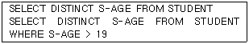
- 50, 40
- 50, 5
- 3, 5
- 3, 1
(정답률: 44%)
7. 데이터웨어하우스(Datawarehouse)의 설명으로 가장 적절한 것은?
- 제품의 생산을 위한 프로세스를 전산화해서 부품조달에서 생산계획, 납품, 재고관리 등을 효율적으로 처리할 수 있는 공급망 관리 솔루션
- 데이터 수집이나 보고를 위해 작성된 각종 양식, 보고서 관리, 문서보관 등 여러 형태의 문서관리를 수행
- 대량의 데이터로부터 각종 기법, 등을 이용하여 숨겨져 있는 데이터간의 상호 관련성, 패턴, 경향 등의 유용한 정보를 추출하여 의사결정에 적용
- 기간 업무 시스템에서 추출되어 새로이 생성된 데이터베이스로서 의사결정자원 시스템을 지원하는 주체적, 통합적, 시간적 데이터의 집합체
(정답률: 50%)
8. 선형 자료구조에 해당하지 않는 것은?
- Binary tree
- Dense list
- Doubly linked list
- Stack
(정답률: 60%)
9. 다음 중 SQL의 합집합 연산이 제대로 수행되는 경우는?
- 두 테이블의 속성 개수가 같고, 대응되는 각 속성들의 도메인이 같으나 속성명들이 다른 경우
- 두 테이블의 속성 개수가 같고, 대응되는 각 속성들의 도메인이 같으나 속성들의 도메인이 다른 경우
- 두 테이블의 속성 개수가 다르나, 대응되는 각 속성들의 도메인이 같으며 속성명들이 같은 경우
- 두 테이블의 속성 개수가 같으나 대응되는 각 속성들의 도메인이 다르고 속성명들이 다른 경우
(정답률: 36%)
10. 다음 그림은 트랜잭션 상태도를 나타내고 있다. 각 상태에 대한 설명으로 옳지 않은 것은?
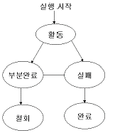
- 활동(active) - 초기상태로 트랜잭션이 Begin_Trans에서 부터 실행을 시작하였거나 실행중인 상태
- 부분 완료(partially commited) - 트랜잭션이 명령문 중 일부를 실험한 직후의 상태
- 철회(aborted) -트랜잭션이 실행에 실패하여 Rollback 연산을 수행한 상태
- 완료(committed) - 트랜잭션이 실행을 성공적으로 완료연산을 수행한 상태
(정답률: 55%)
11. 트라이(trie) 색인에 대한 설명으로 옳지 않은 것은?
- 키 탐색을 위해 키값을 직접 표현한다.
- 트라이의 차수는 키값을 표현하기 위해 사용하는 문자의 수(radix)에 의해 결정한다.
- 키값의 분포를 미리 예측할 수 있다면 기억장소를 절약할 수 있다.
- 트라이의 크기는 나타내려고 하는 키값의 기수와 키 필드 길이에 의해 결정된다.
(정답률: 36%)
12. 시스템 카탈로그에 대한 설명으로 옳지 않은 것은?
- 시스템 카탈로그는 테이블정보, 인덱스 정보, 뷰정보 등을 저장하는 시스템 테이블이다.
- 시스템 카탈로그는 DBMS가 스스로 생성하고, 유지하는 데이터베이스 내의 특별한 테이블이다.
- 시스템 카탈로그에는 사용자의 접근이 허락되지 않는다.
- 시스템 카탈로그에 대한 갱신은 DBMS가 자동적으로 수행한다.
(정답률: 59%)
13. 다음 그림은 E-R 도의 예를 나타낸다. 그림에 나타난 구성 요소와 그 설정이 틀린 것은?
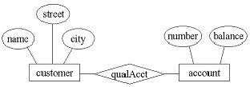
- 사각형-개체(entity)집합을 나타낸다.
- 타원-개체(entity)를 나타낸다.
- 마름모-개체(entity) 집합간의 관계를 나타낸다.
- 선(line)-속성과 개체(entity) 집합을 연결하며, 개체 집합과 관계(relation)를 연결한다.
(정답률: 57%)
14. 다음과 같이 주어진 두개의 함수적 종속 관계에서 추론될 수 없는 종속 관계는?
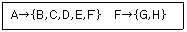
- B→F
- F→G
- A→A
- A→{G, H}
(정답률: 54%)
15. 다음 SQL 문의 실행결과를 가장 올바르게 설명한 것은?
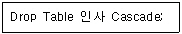
- 인사 테이블을 제거한다.
- 인사 테이블을 참조하는 테이블과 인사 테이블을 제거한다.
- 인사테이블이 참조중이면 제거하지 않는다.
- 인사 테이블을 제거할 지의 여부를 사용자에게 다시 질의한다.
(정답률: 69%)
16. 삽입(embedded) SQL 문이 포함된 응용 프로그램에서 프로그램의 중간에 ‘EXEC SQL FETCH C1.....'과 같은 문장이 포함되어 있다면, 이 문장이 나타나기 전에 반드시 먼저 나타나야 되는 삽입 SQL명령어들로 구성된 것은?
- DECLARE CURSOR
- DECLARE CURSOR, OPEN
- DECLARE CURSOR, OPEN, PREPARE
- DECLARE CURSOR, OPEN, PREPARE, EXECUTE
(정답률: 41%)
17. 파일에 대한 설명 중 옳지 않은 것은?
- 순차 파일(Sequential file)을 생성되는 순서에 따라 레코드를 순차적으로 저장하므로, 저장 매체의 효율이 가장 높다.
- 직접파일(Direct file)은 특정 레코드에 접근하기 위해서 디스크의 물리적주소로 변환할 수 있는 함수를 사용한다.
- 색인 순차 파일(Indexed sequential file)은 순차 및 직접 접근 형태를 모두 지원할 수 있으나 기억장소의 낭비를 초래한다.
- VSAM 파일(Virtual Storage Access method file)은 검색 속도를 빠르게 하기 위하여, 기본 데이터구역과 오버플로우 구역을 구분하여 갖추어야 한다.
(정답률: 45%)
18. 관계 데이터베이스의 정규화에 관한 설명으로 옳지 않은 것은?
- 3NF는 무손실 죠인 또는 종속성 보존을 저해하지 않고도 항상 3NF 설계를 얻을 수 있다.
- 3NF는 정규형에서 모든 이행(transitive)종속을 제거하지 못한 경우라도 정보의 중복에 대한 문제가 존재하지 않는 장점을 가지고 있다.
- 모든 BCNF(Boyce-Codd Normal Form)가 종속성을 보존하는 것은 아니다.
- 모든 BCNF 스킴은 3NF에 속하게 되며, 따라서 BCNF가 3NF보다 한정적 제한이 더 많다.
(정답률: 41%)
19. 데이터 정의 언어(Data Definition Language : DDL)와 관련된 설명으로 옳지 않은 것은?
- 데이터베이스 스킴은 데이터 정의 언어라는 특별한 언어로서 표현된 정의의 집합으로 지정된다.
- DDL은 번역한 결과가 데이터사전(data-dictionary 또는 data directory)이라는 특별한 파일에 여러 개의 테이블로서 저장된다.
- 데이터 사전은 단순 데이터(simple data)를 수록하고 있는 파일이다.
- 데이터베이스 관리 시스템(DBMS) 내에서 사용자의 편의와 구현상의 편의를 위해 명령어를 제공하는 것은 DDL이다.
(정답률: 47%)
20. Let us consider a binary tree with 6 leaf nodes. How many nodes of degree two are in the binary tree?
- 4
- 5
- 6
- 7
(정답률: 42%)
2과목: 전자 계산기 구조
21. 십진수 21.6을 2진수로 변환한 것은?
- 10111.1011
- 10101.1101
- 10101.1010
- 10101.1001
(정답률: 41%)
22. 다음 인터럽트 중 최우선권이 주어져야 하는 경우는?
- 정전
- 자료전달의 오류
- 명령의 오동작
- 입출력 장치의 오동작
(정답률: 58%)
23. 제어 데이터가 될 수 없는 것은?
- 연산자의 종류
- 연산을 위한 수치 데이터
- 인스트럭션의 주소지정방식
- 연산결과에 대한 상태 플래그 내용
(정답률: 38%)
24. 인터럽트 우선순위 체제의 방법이 아닌 것은?
- 폴링
- 인터럽트 요청 체인
- 인터럽트 우선순위 체인
- 인터럽트 서비스 루틴
(정답률: 41%)
25. DMA란?
- 인터럽트와 같다.
- Direct Main Acknowledge의 약자이다.
- Direct Main Accumulator의 약자이다.
- 메모리와 입, 출력 디바이스 사이에 데이터의 주고 받음이 직접 행해지는 기법
(정답률: 53%)
26. 주소 지정 방식(Addressing Mode) 중에서 프로그램 키값에 명령어의 주소부분을 더해서 실제주소를 구하는 방식은?
- 직접 번지 방식
- 즉치 번지 방식
- 상대 번지 방식
- 레지스터 번지 방식
(정답률: 41%)
27. 프로그램 디버깅(debugging)에 필요하지 않는 것은?
- 트레이서(tracer)
- 스태틱 덤프(static dump)
- 다이나믹 덤프(dynamic dump)
- 스왑(swap) 또는 스와핑(swapping)
(정답률: 47%)
28. 대량의 자료를 장시간 보관하는데 가장 유리한 장치는?
- 자기테이프 장치
- 자기디스크 장치
- 자기 드럼 장치
- OMR 카드 장치
(정답률: 42%)
29. 인터럽트 처리과정 중 인터럽트를 요청한 장치를 하드웨어로 판별하는 방법은?
- 폴링 방법
- 스택에 의한 방법
- 데이지 체인을 이용한 방법
- 장치번호 디코더에 의한 방법
(정답률: 45%)
30. Associative 기억장치에 사용되는 기본요소가 아닌 것은?
- 일치 지시기
- 마스크 레지스터
- 인덱스 레지스터
- 검색 데이터 레지스터
(정답률: 24%)
31. 중앙처리장치가 주기억장치보다 더 빠르기 때문에 프로그램 실행 속도를 중앙처리장치의 속도에 근접하도록 하기 위해서 사용되는 기억장치는?
- 가상 기억 장치
- 모듈 기억 장치
- 보조 기억 장치
- 캐시 기억 장치
(정답률: 61%)
32. 어느 컴퓨터의 기억 용량이 1M byte이다. 이때 필요한 주소선의 수는?
- 8개
- 16개
- 20개
- 24개
(정답률: 42%)
33. CPU가 인스트럭션을 수행하는 순서는?
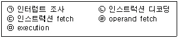
- (ㄷ)-(ㄱ)-(ㄴ)-(ㄹ)-(ㅁ)
- (ㄷ)-(ㄴ)-(ㄹ)-(ㅁ)-(ㄱ)
- (ㄴ)-(ㄷ)-(ㄹ)-(ㅁ)-(ㄱ)
- (ㄹ)-(ㄷ)-(ㄴ)-(ㅁ)-(ㄱ)
(정답률: 48%)
34. 인터럽트 처리 루틴에서 반드시 사용되는 레지스터는?
- Index Register
- Accumulator
- Program Counter
- MAR
(정답률: 44%)
35. 전 가산기(full adder)의 carry 비트를 논리식으로 나타낸 것은?
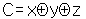
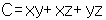
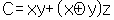
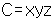
(정답률: 41%)
36. 리 엔트란시(re-entrancy)는 멀티 프로그래밍이 가능한 계산기에서 여러 명의 사용자가 같은 코드를 함께 이용하기 위한 일차적인 필수조건이다. 이런 리 엔트란시를 가능하게 한 것은?
- 인덱스 레지스터(Index register)와 간접번지 방법(Indirect addressing)의 사용
- 결합 기억기(associate memory)의 사용
- 고속 시프트 레지스터(shift register)의 사용
- 효율적인 컴파일러(compiler)의 사용
(정답률: 33%)
37. 다음 약어들 중 기억장치와 직접적인 관계가 없는 것은?
- DMA
- MAR
- MBR
- MUX
(정답률: 54%)
38. I/O operation과 관계없는 것은?
- Channel
- Handshaking
- Interrupt
- Emulation
(정답률: 49%)
39. Interrupt 발생 원인이 아닌 것은?
- 정전
- 기억공간 내 허용되지 않는 곳에의 접근 시도
- Operator의 조작
- 임의의 부프로그램에 대한 효율
(정답률: 54%)
40. 0-번지(zero-address) 명령형을 갖는 전자계산기구조의 원리는 어느 것을 사용하는가?
- accumulator extension register
- virtual memory architecture
- stack architecture
- micro-programming
(정답률: 47%)
3과목: 운영체제
41. 디스크 공간 할당 방식에 관한 설명으로 옳지 않은 것은?
- 연속할당 기법에서는 요청한 파일의 크기보다 큰 연속된 기억공간이 없을 경우라도 파일은 생성될 수 있다.
- 불연속 할당기법은 크게 링크를 이용한 섹터 단위의 할당과 블록 단위의 할당으로 구분할 수 있다.
- 블록 할당 기법에는 블록 체인 기법, 인덱스 블록 체인 기법, 블록 지향 파일 사상 기법 등이 있다.
- 블록 단위의 할당 기법은 하나의 섹터를 할당하는 대신에 연속된 섹터로 구성된 블록을 할당한다.
(정답률: 47%)
42. UNIX에서 Inode는 한 파일이나 디렉토리에 관한 모든 정보를 포함하고 있는데, 이에 해당하지 않는 것은?
- 파일이 가장 처음 변경된 시간 및 파일의 타입
- 파일 소유자의 사용자 번호
- 파일이 만들어진 시간
- 데이터가 담겨진 블록의 주소
(정답률: 48%)
43. 모니터(Monitor)에 대한 설명으로 옳지 않은 것은?
- 특정의 공유자원을 할당하는데 필요한 데이터 및 프로시듀어를 포함하는 병행성 구조(concurrency-construct)이다.
- 모니터 외부의 프로세스는 모니터 내부의 데이터를 직접 액세스 할 수 없다.
- 모니터 내의 자원을 원하는 프로세서는 반드시 해당 모니터의 진입루(entry)를 호출해야 하고, 원하는 모든 프로세서는 동시에 모니터 내에 들어갈 수 있다.
- 모니터에서 사용되는 연산은 Wait와 Signal이 있다.
(정답률: 46%)
44. 운영체제의 기능에 해당하지 않는 것은?
- 사용자와 컴퓨터 사이의 인터페이스를 제공한다.
- 효율적인 자원관리를 한다.
- 시스템의 오류를 처리한다.
- 두 개 이상의 목적 프로그램을 합쳐서 실행 가능한 프로그램으로 만든다.
(정답률: 55%)
45. 하나의 프로세스가 작업 수행 과정에서 수행하는 기억 장치 접근에서 지나치게 페이지 폴트가 발생하여 프로세스 수행에 소요되는 시간보다 페이지 이름에 소요되는 시간이 더 커지는 현상은?
- 스레싱(thrashing)
- 워킹세트(working set)
- 세마포어(semaphore)
- 교환(swapping)
(정답률: 60%)
46. 프로세스가 자원을 요구할 때 시스템이 안전상태를 유지할 수 잇는 프로세스의 자원 요구만을 할당하여 주는 수행가(Banker's) 알고리즘의 교착상태 해결 방식은?
- prevention
- avoidance
- detection & recovery
- non-preemption
(정답률: 40%)
47. 입출력 수행, 기억장치 할당 및 오퍼레이터와 대화 등을 하기 위해 발생하는 인터럽트는?
- SVC 인터럽트(Supervisor Call Interrupt)
- 입출력 인터럽트(I/O Interrupt)
- 외부 인터럽트(External Interrupt)
- 프로그램 검사 인터럽트(Program check Interrupt)
(정답률: 40%)
48. 분산 처리 시스템의 장점에 해당하지 않는 것은?
- 자원공유도 향상
- 보안성 향상
- 처리율 향상
- 신뢰성 향상
(정답률: 58%)
49. 어셈블러를 두 개의 Pass로 구성하는 이유로서 가장 적절한 것은?
- pass 1, 2의 어셈블러 프로그램이 작아서 경제적이기 때문에
- 한 개의 pass만을 사용하면 프로그램의 크기가 증가하여 유지보수가 어렵기 때문에
- 한 개의 pass만을 사용하면 메모리가 많이 소요되기 때문에
- 기호를 정의하기 전에 사용할 수 있는 프로그램 작성이 용이하기 때문에
(정답률: 40%)
50. 가변분할에서 그림과 같이 할당되었을 때 기억장치를 압축하면 새로운 공간에 기억될 수 있는 프로그램은 얼마의 크기까지 가능한가? {단, 사선 부분은 단편화조각(fragmentation)이다.}
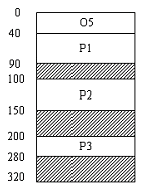
- 40
- 60
- 80
- 100
(정답률: 55%)
51. 도스에서 메모리(RAM)에 가상 디스크 드라이브를 만들어 하드디스크 드라이브로 활용할 수 있게 하는 장치 제어기는?
- RAMDRIVE.SYS
- HIMEM.SYS
- EMM386.EXE
- DRIVER.SYS
(정답률: 53%)
52. 디스크 스케줄링에서 SSTF(Shortest Seek Time First)에 대한 설명으로 옳지 않은 것은?
- 탐색 거리가 가장 짧은 요청이 먼저 서비스를 맡는다.
- 일괄처리 시스템보다는 대화형 시스템에 적합하다.
- 가운데 트랙이 안쪽이나 바깥쪽 트랙보다 서비스 모듈 확률이 높다.
- 헤드에서 멀리 떨어진 요청은 기아상태(starvation state가 발생할 수 있다.
(정답률: 45%)
53. 매크로(macro)에 대한 설명으로 옳지 않은 것은?
- 매크로 정의 내에 또 다른 매크로 정의를 할 수 없다.
- 매크로 라이브러리는 여러 프로그램에서 공통적으로 자주 사용되는 매크로들을 모아 놓은 라이브러리이다.
- 매크로 프로세서의 수행 기능은 매크로 정의 인식, 정의 저장, 호출 인식, 확장 및 매개 변수 치환이다.
- 매크로는 일종의 문자열 치환과 같이 사용된 횟수만큼 명령어를 생성 삽입해서 실행한다.
(정답률: 52%)
54. 가상기억장치를 위한 대체(replacement) 알고리즘에 대한 설명 중 옳은 것은?
- LRU 알고리즘은 사용된 횟수가 가장 작은 페이지를 대체 대상으로 선정한다.
- Belady의 최적(optimal) 알고리즘은 이후에 가장 오랫동안 사용되지 않을 페이지를 대치하는 것으로서 실현 가능성이 희박하다.
- FIFO 알고리즘은 창조된 지 가장 오래된 페이지를 대체대상으로 선정한다.
- NUR 알고리즘은 가장 최근에 참조된 페이지를 대체 대상으로 선정한다.
(정답률: 36%)
55. 페이지(page) 크기에 대한 설명으로 옳은 것은?
- 페이지 크기가 작을 경우, 동일한 크기의 프로그램에 더 많은 수의 페이지가 필요하게 되어 주소 변환에 필요한 페이지 사상표의 공간은 더 작게 요구된다.
- 페이지 크기가 작을 경우, 페이지 단편화를 감소시키고 특정한 참조 지역성만을 포함하기 때문에 기억장치 효율은 좋을 수 있다.
- 페이지 크기가 클 경우 페이지 단편화로 인해 많은 기억 공간을 낭비하고 페이지 사상표의 크기도 늘어난다.
- 페이지 크기가 클 경우, 디스크와 기억 장치간에 대량의 바이트 단위로 페이지가 이동하기 때문에 디스크 접근 시간 부담이 증가되어 페이지 이동 호출이 나빠진다.
(정답률: 42%)
56. UNIX에 대한 설명으로 옳지 않은 것은?
- 커널의 크기가 비교적 작다.
- 이식성이 높다.
- 커널 코드의 대부분이 C 언어로 작성되어 있다.
- 명령어 해석기는 운영체제 커널에 포함되어 있다.
(정답률: 49%)
57. 효율적인 주기억장치의 접근을 위하여 기억장소의 연속된 위치를 서로 다른 뱅크로 구성하여 하나의 주소를 통하여 여러 개의 위치에 해당하는 기억 장소를 접근할 수 있도록 하는 방법은?
- 인터리빙(Interleaving)
- 스풀링(Spooling)
- 버퍼링(Buffering)
- 카운팅(Counting)
(정답률: 57%)
58. 비선점(non-preemptive) 스케줄링 방식에 해당하는 것으로만 짝지어진 것은?
- FCFS(First come First served), SJF(Shortest Job First)
- RR(Round-Robin), SRT(Shortest remaining time),
- SRT(shortest remaining time), SJF(shortest job first)
- MFI(Multi-level queue), FCFS(first come first served)
(정답률: 47%)
59. 공간 구역성(Spatial Locality)에 해당하지 않는 것은?
- 셀(Counting)과 집계(Totaling) 등에서 사용되는 변수
- 프로그램에서 관련된 변수들을 서로 근처에 선언하는 경우
- 순차적 코드(Sequential Code)의 실행
- 배열 순례(Array Traversal)
(정답률: 39%)
60. NFS(Network File System)에 대한 설명으로 옳지 않은 것은?
- Carnegie-Mellon 대학에서 개발되어 온 분산 컴퓨팅 환경이며, 클라이언트 머신과 서버 머신으로 구분된 확장성이 큰 분산 파일 시스템이다.
- 독립된 파일 시스템을 가진 서로 다른 워크스테이션의 모임이 서로 연결된 형태이다.
- 네트워크를 통하여 원격 파일을 액세스하기 위하여 구현되고 명세화된 파일 관리 시스템이다.
- 투명성을 통하여 파일 시스템간에 일정 수준의 공유를 허용한다.
(정답률: 30%)
4과목: 소프트웨어 공학
61. 실제 상황이 나오기 전에 가상으로 시뮬레이션을 통해 최종 결과물에 대한 예측을 할 수 있는 소프트웨어 수명 주기 모형은?
- 집중적 모형(spiral model)
- 프로토타이핑 모형(prototyping model)
- 코코모 모형(cocomo model)
- 폭포수 모형(waterfall model)
(정답률: 60%)
62. 프로그램을 구성하는 기능을 기술한 것으로 입력, 처리, 출력을 기술하는 HIPO 패키지에 해당하는 것은?
- Overview Diagram
- Detail Diagram
- Visual Table of contents
- Index Diagram
(정답률: 37%)
63. 소프트웨어 수명주가 도형 중 폭포수 모형(Waterfall Model)의 개발 단계로 옳은 것은?
- 계획 - 분석 - 설계 - 시험 - 구현 - 유지보수
- 계획 - 분석 - 설계 - 구현 - 시험 - 유지보수
- 계획 - 설계 - 분석 - 구현 - 시험 - 유지보수
- 계획 - 분석 - 설계 - 구현 - 시험 - 설치
(정답률: 54%)
64. COCOMO 모델에 대한 설명으로 옳지 않은 것은?
- Bohem이 제시한 비용 추정 모델이다.
- 비용추정단계 및 적용변수의 구체화 정도에 때라 기본(Basic), 중간(Intermediate), 진보(Advanced)형 모델로 구분할 수 있다.
- 비용견적의 강도 분석 및 비용견적의 유연성이 높아 소프트웨어 개발비 견적에 널리 통용되고 있다.
- 기본(Basic) 모형은 단순히 소프트웨어의 크기와 개발 모드에 의해서 구해진다.
(정답률: 31%)
65. 소프트웨어 유지보수에 대한 설명으로 옳지 않은 것은?
- 소프트웨어 유지보수 비용은 개발비용보다 일반적으로 적다.
- 소프트웨어 유지보수를 용이하게 하려면 시험용이성, 이해성, 수정용이성, 이식성이 고려되어야 한다.
- 소프트웨어 유지보수의 과정은 유지보수요구, 현 시스템에 대한 이해, 수정 및 시험 순으로 반복하여 일어난다.
- 소프트웨어 유지보수는 기능개선, 하자보수, 환경적응, 예방조치를 목적으로 소프트웨어의 수명을 연장시키는 작업이다.
(정답률: 59%)
66. Rumbaugh의 객체 모델링 기법(OMT)에서 사용하는 세 가지 모델링이 아닌 것은?
- 객체 모델링(object modeling)
- 정적 모델링(static modeling)
- 동적 모델링(dynamic modeling)
- 기능 모델링(functional modeling)
(정답률: 50%)
67. LOC 기법에 의하여 예측된 총라인수가 25000 라인일 경우 개발에 투입될 프로그래머의 수가 5명이고, 프로그래머들의 평균 생산성이 월 당 500 라인일 때, 개발에 소요되는 시간은?
- 8개월
- 9개월
- 10개월
- 11개월
(정답률: 59%)
68. 제품이 수행할 특정 기능을 알기 위해서 각 기능이 완전히 작동되는 것을 입증하는 검사로서, 기능 검사라고도 하는 것은?
- 블랙 박스 검사
- 그린 박스 검사
- 블루 박스 검사
- 화이트 박스 검사
(정답률: 53%)
69. CASE(Computer Aided Software Engineering)에 대한 설명으로 거리가 먼 것은?
- 개발도구와 개발 발명품이 결합된 것이다.
- 시스템 개발과정의 일부 또는 전체를 자동화하는 것이다.
- 유지보수성을 높이기 위해 기존 소프트웨어를 재구성하고 새로운 기술을 적응시키는 것이다.
- 정형화된 구조 및 메커니즘을 소프트웨어 개발에 적용하여 소프트웨어 생산성 향상을 구현하는 공학기법이다.
(정답률: 34%)
70. 데이터 설계에 있어서, 응집력(cohesion)의 의미로 가장 적절한 것은?
- 데이터 구조들이 시스템 전반에 얼마나 연관관계를 가지고 있는가 하는 정도
- 모듈이 개발 단계별로 얼마나 잘 정의되어 있는가 하는 정도
- 모듈이 독립적인 기능으로 잘 정의되어 있는 정도
- 데이터들간의 상호 연관성의 정도
(정답률: 36%)
71. 소프트웨어 설계의 품질을 평가하는 제도로 결합도와 응집력이 사용된다. 다음 중 가장 우수한 설계 품질은?
- 모듈간의 결합도는 높고 모듈내부의 응집력은 높다.
- 모듈간의 결합도는 높고 모듈내부의 응집력은 낮다.
- 모듈간의 결합도는 낮고 모듈내부의 응집력은 높다.
- 모듈간의 결합도는 낮고 모듈내부의 응집력은 낮다.
(정답률: 50%)
72. 두 모듈이 동일한 자료구조를 조회하는 경우의 결합성이며 자료구조의 어떠한 변화, 즉 포맷이나 구조의 변화는 그것을 조회하는 모든 모듈 및 변화되는 필드를 실제로 조회하지 않는 모듈에까지도 영향을 미치게 되는 결합성은?
- data coupling
- stamp coupling
- control coupling
- content coupling
(정답률: 34%)
73. 유지보수(Maintenance) 작업의 분류상 가장 큰 비중(업무량 및 비용)을 차지하는 부분은?
- 교정정비(Corrective Maintenance)
- 조정정비(Adaptive Maintenance)
- 예방정비(Preventive Maintenance)
- 완전정비(Perfective Maintenance)
(정답률: 44%)
74. 객체지향 설계에 대한 설명으로 옳지 않은 것은?
- 객체지향 설계에 있어 가장 중요한 문제는 시스템을 구성하는 개체와 속성, 연산을 인식하는 것이다.
- 시스템 기술서의 동사는 객체를, 명사는 연산이나 객체 서비스를 나타낸다.
- 객체지향 설계를 문서화할 때 객체와 그들의 부객체(sub-object)의 계층적 구조를 보여주는 계층차트를 그리면 유용하다.
- 객체는 순차적으로(Sequentially) 또는 동시적으로(Concurr-ently) 구현될 수 있다.
(정답률: 41%)
75. 자료흐름도에서 구성요소에 대한 기호의 표현 연결이 옳지 않은 것은?
- 자료흐름 : 화살표로 표시
- 처리공정 : 마름모로 표시
- 자료저장장소 : 직선(단선, 이중선)으로 표시
- 종착지 : 사각형으로 표시
(정답률: 39%)
76. 소프트웨어 재공학에 관한 설명으로 옳지 않은 것은?
- 소프트웨어 재공학은 CASE의 정보저장소와는 무관하다.
- 재공학 활동은 분석, 재구성, 역공학, 이식 활동 등으로 구분할 수 있다.
- 소프트웨어 재공학도 자동화된 도구를 사용하여 소프트웨어를 분석하고 수정하는 과정을 포함한다.
- 소프트웨어 재공학의 일반적인 개념은 데이터와 기능들의 개조 및 개선을 가해 유지보수 용이성을 향상시키자는 것이다.
(정답률: 55%)
77. 소프트웨어 품질목표에 대한 설명으로 옳지 않은 것은?
- 신뢰성(reliability) : 정확하고 일관된 결과를 얻기 위해 요구된 기능을 수행하는 정도
- 이식성(portability) : 다양한 하드웨어 환경에서도 운용 가능하도록 쉽게 수정될 수 있는 정도
- 상호운용성(intercoperability) : 다른 소프트웨어와 정보를 교환할 수 있는 정도
- 사용용이성(usability) : 전체나 일부 소프트웨어가 다른 응용 목적으로 사용될 수 있는 정도
(정답률: 52%)
78. 형상관리(configuration management)의 관리 항목으로 거리가 먼 것은?
- 정의 단계의 문서
- 개발 단계의 문서와 프로그램
- 유지보수 단계의 변경 사항
- 소프트웨어 개발 비용
(정답률: 52%)
79. 객체지향 기법에서 메시지(message)의 전달은 어떻게 이루어지는가?
- 어트리뷰트(attribute)에서 어트리뷰트로
- 오브젝트(object)에서 어트리뷰트로
- 오브젝트(object)에서 오브젝트로
- 클래스(class)에서 데이터(data)로
(정답률: 40%)
80. 소프트웨어 재사용으로 인한 영향이 아닌 것은?
- 품질 향상
- 생산성 인하
- 생산성 향상
- 비용 절감
(정답률: 56%)
5과목: 데이터 통신
81. 주파수 분할 다중화(FDM)의 가장 큰 장점은?
- 주파수 대역폭의 확장에 있다.
- 대역폭과 필터의 가격과 크기에 있다.
- 주파수 대역내의 스팩트럼 만큼 통과시킨다.
- 여러 개의 정보 신호를 한 개의 전송선로에서 동시에 전송할 수 있다.
(정답률: 52%)
82. 통신 회선의 전송 용량을 증가시키기 위한 방법으로 옳은 것은?
- 주파수 대역폭을 증가시킨다.
- 신호 세력을 줄인다.
- 잡음 세력을 높인다.
- 신호대 잡음비를 줄인다.
(정답률: 49%)
83. 데이터 전달을 위한 회선 제어 절차의 단계를 순서대로 나열한 것은?
- 데이터 링크 확립 - 회선 연결 - 데이터 전송 - 데이터 링크 해제 - 회선 절단
- 회선 연결 - 데이터 링크 확립 - 데이터 전송 - 데이터 링크 해제 - 회선 절단
- 데이터 링크 확립 - 회선 연결 - 데이터 전송 - 회선 절단 - 데이터 링크 해제
- 회선 연결 - 데이터 링크 확립 - 데이터 전송 - 회선 절단 - 데이터 링크 해제
(정답률: 52%)
84. 패킷 교환 방식을 사용하는 목적이 아닌 것은?
- 채널과 포트의 통계적 다중화 기능을 제공하기 위해서이다.
- 다수의 사용자간에 비대칭적 데이터 전송을 원활하게 하기 위해서이다.
- 자원의 독점을 하기 위해서이다.
- 모든 사용자간에 빠른 응답 시간을 제공하기 위해서이다.
(정답률: 55%)
85. PCM 방식의 변조 순서로서 옳은 것은?
- 신호 - 양자화 - 표본화 - 부호화
- 신호 - 표본화 - 양자화 - 부호화
- 신호 - 부호화 - 표본화 - 양자화
- 신호 - 표본화 - 부호화 - 양자화
(정답률: 52%)
86. 전화와 같이 동시에 송신과 수신을 하는 전송 방식은?
- 반이중 통신
- 포인트 투 포인트(point-to-point) 통신
- 전이중 통신
- 멀티 드롭(multi drop) 통신
(정답률: 49%)
87. 통신 속도가 200[baud]이고, 보오당 신호레벨이 4일 때 1분 간의 송신 가능 속도는 몇 [baud]인가?
- 12.000
- 24.000
- 48.000
- 96.000
(정답률: 42%)
88. 프레임 동기(framing)의 목적은?
- 누화 방지
- 펄스 안정화
- 각 통화로의 혼선 방지
- 잡음 방지
(정답률: 40%)
89. ISDN에 대한 설명 중 옳지 않은 것은?
- ISDN의 채널은 B, D, E 등이 있다.
- 동일한 통신망으로 음성이나 비 음성 등의 통신 서비스를 제공한다.
- 통신망의 교환접속기능에는 회선 교환방식과 패킷 교환 방식이 있다.
- 256Kbps 1회선교환 서비스가 기본이다.
(정답률: 46%)
90. 전송되는 1문자가 각각 13.5ms가 소요되는 5개의 데이터 펄스, 그리고 16.25ms의 한 개씩의 스타트, 스톱 펄스로 구성된 경우 bps는?
- 50
- 70
- 90
- 100
(정답률: 27%)
91. 인터네트워킹을 설명한 내용 중 옳지 않은 것은?
- X.25네트워크를 통한 가상회선 서비스만을 제공한다.
- TCP/IP를 기본 프로토콜로 갖는다.
- 로컬 네트워크 상호간 연결에는 브리지가 사용된다.
- IP는 여러 개의 패킷 교환망들의 상호 연결을 위한 범용 비연결성 프로토콜이다.
(정답률: 43%)
92. 2400bps 회선을 4800bps 회선으로 교체하였다. 이 때 발생하는 현상으로 옳지 않는 것은?
- 전송량이 2배 증가한다.
- 처리율이 향상된다.
- 전송량이 절반으로 감소한다.
- 응답 시간이 향상된다.
(정답률: 52%)
93. 디지털 신호를 음성대역(0.3∼3.4㎑)내의 아날로그 신호로 변환(변조)한 후 음성 전송용으로 설계된 전송로에 송신한다든지 반대로 전송로부터의 아날로그 신호를 디지털 신호로 변환(복조) 하는 장치를 무엇이라 하는가?
- 모뎀(MODEM)
- 단말(Terminal)
- 전화교환기
- 허브(HUB)
(정답률: 60%)
94. OSI 참조 모델(Reference Model)의 기능 중에서 전송 제어 기능을 수행하는 layer는?
- layer2
- layer3
- layer4
- layer5
(정답률: 33%)
95. 둘 또는 그 이상의 시스템 간에 서로 통신하는 경우에 이러한 통신을 제어하는 OS 수준의 프로그램을 무엇이라고 하는가?
- 회선 제어 프로그램
- 네트워크 프로그램
- 시스템 소프트웨어
- OS 통신 제어 프로그램
(정답률: 39%)
96. 부가가치 통신망의 기능이 아닌 것은?
- 교환기능
- 통신처리기능
- 정보처리기능
- 메시지 저장기능
(정답률: 47%)
97. 적절한 전송 경로를 선택하고 이 경로로 데이터를 전달하는 인터넷워킹(internetworking) 장비는?
- 리피터(repeater)
- 브리지(bridge)
- 라우터(router)
- 게이트웨이(gateway)
(정답률: 48%)
98. 회선제어 절차에 대한 설명 중 올바르게 짝지어진 것은?
- 링크 확립 - 수신측 주소를 전송하여 데이터 전송이 가능하도록 물리적인 통신 회선을 접속시켜주는 단계이다.
- 회로 연결 - 접속된 통신 회선 상에서 송신측과 수신측 간의 확실한 데이터 전송을 수행하기 위한 논리적 경로를 구성하는 단계이다.
- 메시지 전달 - 데이터를 수신측에 전송하며, 잡음에 의한 데이터의 오류 제어와 순서 제어를 수행하는 단계이다.
- 링크절단 - 연결된 물리적인 통신 회선을 절단하는 단계이다.
(정답률: 35%)
99. 다중화(Multiplexing)를 함으로써 얻어지는 가장 좋은 점은?
- 에러 정정이 쉽고 간단해 진다.
- 송·수신 시스템이 간단해 진다.
- 전송 효율을 높일 수 있다.
- 전송 속도가 매우 빨라진다.
(정답률: 51%)
100. 패킷교환이 가상회선 방식과 회선교환 방식의 공통점은?
- 전송회선을 이용한다
- 별도의 호(call) 설정 과정이 있다.
- 회선 이용률이 낮다.
- 데이터 전송 단위 규모를 가변으로 조정할 수 있다.
(정답률: 39%)
트랜잭션은 데이터베이스에서 일어나는 작업의 단위로, 여러 개의 작업이 모여 하나의 논리적인 작업을 수행합니다. 이 때, 트랜잭션 중간에 문제가 발생하여 작업이 중단되거나 완료되지 않은 상태로 남아있는 경우를 트랜잭션 장애(Transaction Failure)라고 합니다.
트랜잭션 장애는 다른 장애들과 달리 데이터베이스 내부에서 발생하는 문제로, 데이터베이스 시스템 자체의 문제가 아니라 특정 작업이나 쿼리 등의 문제로 인해 발생합니다. 따라서 데이터베이스에 손상을 줄 가능성이 가장 적은 장애로 분류됩니다.
트랜잭션 장애가 발생하면 해당 트랜잭션을 롤백하거나 복구하는 등의 작업을 통해 회복해야 합니다.